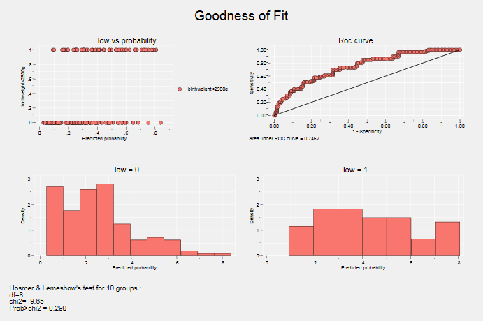

Contenu
| # | Nom | Type | Remarques |
|---|---|---|---|
| 1 | cpairs | qualité de l'ajustement | |
| 2 | ggof | qualité de l'ajustement | |
| 3 | tmt3 | test paramètres | |
| 4 | qlt | analyse de survie | |
| 5 | competout | analyse de survie | |
| 6 | gpct | graphique | version très provisoire |
| 7 | margins_transform | postestimation | commande programmée par J.Pitblato (StataCorp LP) |
Badges
help file
Fichier d’aide dans le package
Version provisoire
Améliorations à venir
Installation:
Les 6 commandes sont installées directement avec:
net install stata_commands, replace from("https://raw.githubusercontent.com/mthevenin/stata_commands/master/")Désinstallation:
ado uninstall stata_commandshelp file
Calcule quelques statistiques de mesure de la qualité de l’ajustement après un modèle de type logit, probit, cloglog.
Le temps d’exécution de la commande peut être un peu long.
Statistiques:
proportions de paires concordantes et discordantes, D de Somer, Tau-a, Gamma et aire sous la courbe de ROC (c-AUC)
Syntaxe:
cpairs variable_dependante
Exemple:
webuse lbw, clear
logit low age lwt i.race smoke ptl ht ui, cformat(%9.2f) pformat(%5.3f) sformat(%8.3f)
cpairs low . webuse lbw, clear
(Hosmer & Lemeshow data)
. logit low age lwt i.race smoke ptl ht ui, cformat(%9.2f) pformat(%5.3f) s
> format(%8.3f)
Iteration 0: log likelihood = -117.336
Iteration 1: log likelihood = -101.28644
Iteration 2: log likelihood = -100.72617
Iteration 3: log likelihood = -100.724
Iteration 4: log likelihood = -100.724
Logistic regression Number of obs = 189
LR chi2(8) = 33.22
Prob > chi2 = 0.0001
Log likelihood = -100.724 Pseudo R2 = 0.1416
------------------------------------------------------------------------------
low | Coef. Std. Err. z P>|z| [95% Conf. Interval]
-------------+----------------------------------------------------------------
age | -0.03 0.04 -0.743 0.457 -0.10 0.04
lwt | -0.02 0.01 -2.188 0.029 -0.03 -0.00
|
race |
black | 1.26 0.53 2.399 0.016 0.23 2.29
other | 0.86 0.44 1.963 0.050 0.00 1.72
|
smoke | 0.92 0.40 2.304 0.021 0.14 1.71
ptl | 0.54 0.35 1.565 0.118 -0.14 1.22
ht | 1.83 0.69 2.650 0.008 0.48 3.19
ui | 0.76 0.46 1.651 0.099 -0.14 1.66
_cons | 0.46 1.20 0.383 0.702 -1.90 2.82
------------------------------------------------------------------------------
.
. cpairs low
Association of Predicted Probabilities and Observed Responses
Number of pairs = 7670
Proportion Concordant = 0.746
Proportion Discordant = 0.254
Proportion Tied = 0.000
Somer's D = 0.492
Gamma = 0.493
Tau-a = 0.213
c-AUC = 0.746help file
Sous forme de graphiques combinés, la commande présente des éléments de diagnostique de la qualité de l’ajustement après un modèle de type logit, probit, cloglog.
Graphiques: Probabilités prédites vs réponse, courbe de Roc, densités des probabilités prédites selon la réponse.
Le graphique affiche également le résultat du test d’Hosmer et Lemeshow pour 10 groupes.
Syntaxe:
ggof variable_dependante
Exemple:
qui webuse lbw, clear
qui logit low age lwt i.race smoke ptl ht ui
ggof low . qui webuse lbw, clear
. qui logit low age lwt i.race smoke ptl ht ui
. ggof low|  |
help file
Affiche des tests multiples d’hypothèse nulle après un modèle (\(b_1=b_2=…b_p=0\)). Utile seulement pour les variables catégorielles à plus de 2 modalités.
Modèles (vérifiés):
regress, logit, probit, cloglog, poisson, nbreg, cox, mlogit, ologit, oprobit
Syntaxe: tmt3 variables
qui webuse lbw, clear
qui logit low age lwt i.race smoke ptl ht ui
tmt3 race . qui webuse lbw, clear
. qui logit low age lwt i.race smoke ptl ht ui
. tmt3 race
Type-III multiple test for categorical covariable(s) after logit
-------------+-----------------------------------
Variables | df Khi2 Prob>chi2
-------------+-----------------------------------
race| 2 7.00521 0.030
-------------+----------------------------------- webuse sysdsn1, clear
qui mlogit insure age male nonwhite i.site
tmt3 site . webuse sysdsn1, clear
(Health insurance data)
. qui mlogit insure age male nonwhite i.site
. tmt3 site
Type-III multiple test for categorical covariable(s) after mlogit
For insure = 2
-------------+-----------------------------------
Variables | df Khi2 Prob>chi2
-------------+-----------------------------------
site| 2 10.7754 0.005
-------------+-----------------------------------
For insure = 3
-------------+-----------------------------------
Variables | df Khi2 Prob>chi2
-------------+-----------------------------------
site| 2 6.80668 0.033
-------------+----------------------------------- webuse auto, clear
qui gen gweight=weight
qui recode gweight min/2239=1 2240/3189=2 3190/3599=3 3600/max=4
qui regress mpg ib2.gweight ib2.rep78 i.foreign
tmt3 gweight rep78 . webuse auto, clear
(1978 Automobile Data)
. qui gen gweight=weight
. qui recode gweight min/2239=1 2240/3189=2 3190/3599=3 3600/max=4
. qui regress mpg ib2.gweight ib2.rep78 i.foreign
. tmt3 gweight rep78
Type-III multiple test for categorical covariable(s) after regress
-------------+--------------------------
Variables | df F Prob>F
-------------+--------------------------
gweight| (3,60) 31.5 0.000
rep78| (4,60) 2.65 0.042
-------------+--------------------------Calcul des durées pour plusieurs quantiles de la fonction de survie estimée à partir de la méthode actuarielle (commande ltable). La commande ltable ne permettant de récupérer directement la fonction d survie estimées, il convient d’utiliser l’option saving(nom_base).
Estimations des durées de vie avec Stata et Stata (voir ce que fait R avec):
Rappel: la méthode actuarielle est une méthode dite continue, il convient donc d’avoir des bornes ouvertes ou fermées sur chaque intervalle.
La définition des bornes diffère entre les deux logiciels, ce qui génère des résultats différents: au niveau des estimations de la survie reportées sur chaque intervalle et donc au final sur les durées estimées pour différents quantiles de la fonction de séjour (calcul par interpolation linéaire) .
Stata : \(t(i) \leq t < t(i+1)\)
Sas : \(t(i) < t \leq t(i+1)\)
La commande qlt permet de récupérer des tables de survie identiques entre les deux logiciels et donc d’afficher par exemple la même durée médiane.
Syntaxe:
qlt [if/in] [, sas]
Exemple:
webuse rat, clear
ltable t died, saving(lt, replace) interval(10) by(group)
use lt, clear
qlt if group==1
qlt if group==1, sas
list
use lt, clear
qlt if group==2
qlt if group==2, sas
list . webuse rat, clear
. ltable t died, saving(lt, replace) interval(10) by(group)
Beg. Std.
Interval Total Deaths Lost Survival Error [95% Conf. Int.]
-------------------------------------------------------------------------------
group = 1
140 150 19 1 0 0.9474 0.0512 0.6812 0.9924
160 170 18 1 0 0.8947 0.0704 0.6408 0.9726
180 190 17 2 0 0.7895 0.0935 0.5319 0.9153
190 200 15 2 0 0.6842 0.1066 0.4279 0.8439
200 210 13 2 0 0.5789 0.1133 0.3321 0.7626
210 220 11 2 1 0.4687 0.1155 0.2386 0.6698
220 230 8 2 0 0.3515 0.1125 0.1489 0.5633
230 240 6 2 0 0.2343 0.1010 0.0745 0.4445
240 250 4 1 1 0.1674 0.0917 0.0384 0.3751
260 270 2 1 0 0.0837 0.0749 0.0065 0.2942
300 310 1 1 0 0.0000 . . .
group = 2
140 150 21 1 0 0.9524 0.0465 0.7072 0.9932
150 160 20 1 0 0.9048 0.0641 0.6700 0.9753
160 170 19 1 0 0.8571 0.0764 0.6197 0.9516
190 200 18 1 0 0.8095 0.0857 0.5689 0.9239
200 210 17 1 1 0.7605 0.0935 0.5168 0.8926
230 240 15 7 0 0.4056 0.1099 0.1968 0.6060
240 250 8 1 0 0.3549 0.1072 0.1596 0.5572
260 270 7 1 0 0.3042 0.1032 0.1248 0.5063
280 290 6 2 0 0.2028 0.0903 0.0634 0.3973
290 300 4 2 0 0.1014 0.0679 0.0172 0.2753
320 330 2 1 0 0.0507 0.0494 0.0035 0.2076
340 350 1 0 1 0.0507 0.0494 0.0035 0.2076
-------------------------------------------------------------------------------
. use lt, clear
. qlt if group==1
Duree pour differents quantiles de la fonction de survie
Definition des bornes Stata-ltable
S(t)=0.90: t= 158.000
S(t)=0.75: t= 183.750
S(t)=0.50: t= 207.159
S(t)=0.25: t= 228.663
S(t)=0.10: t= 256.103
. qlt if group==1, sas
Duree pour differents quantiles de la fonction de survie
Definition des bornes Sas-lifetest
S(t)=0.90: t= 178.000
S(t)=0.75: t= 193.750
S(t)=0.50: t= 217.159
S(t)=0.25: t= 238.663
S(t)=0.10: t= 292.205
. list
+---------------------------------------------------------------+
| group t0 t1 survival sesurv~l lsurvi~l usurvi~l |
|---------------------------------------------------------------|
1. | 1 140 150 1 . . . |
2. | 1 160 170 .9473684 1.000122 .6811868 .9924147 |
3. | 1 180 190 .8947368 .7074713 .6407943 .9725854 |
4. | 1 190 200 .7894737 .501165 .5319127 .9152861 |
5. | 1 200 210 .6842105 .4107024 .4279406 .8439419 |
|---------------------------------------------------------------|
6. | 1 210 220 .5789474 .3579703 .3320811 .7626399 |
7. | 1 220 230 .4686717 .3250582 .2385695 .6698043 |
8. | 1 230 240 .3515038 .3059934 .1488843 .5632942 |
9. | 1 240 250 .2343358 .296977 .0745044 .4445302 |
10. | 1 260 270 .1673827 .3064088 .0384353 .3751437 |
|---------------------------------------------------------------|
11. | 1 300 310 .0836914 .3605598 .0065463 .2941596 |
12. | 1 310 . 0 .3605598 . . |
+---------------------------------------------------------------+
. use lt, clear
. qlt if group==2
Duree pour differents quantiles de la fonction de survie
Definition des bornes Stata-ltable
S(t)=0.90: t= 151.000
S(t)=0.75: t= 200.884
S(t)=0.50: t= 222.018
S(t)=0.25: t= 270.688
S(t)=0.10: t= 290.825
. qlt if group==2, sas
Duree pour differents quantiles de la fonction de survie
Definition des bornes Sas-lifetest
S(t)=0.90: t= 163.000
S(t)=0.75: t= 230.295
S(t)=0.50: t= 237.339
S(t)=0.25: t= 285.344
S(t)=0.10: t= 320.550
. list
+---------------------------------------------------------------+
| group t0 t1 survival sesurv~l lsurvi~l usurvi~l |
|---------------------------------------------------------------|
1. | 2 140 150 1 . . . |
2. | 2 150 160 .952381 1.000099 .7072068 .9931521 |
3. | 2 160 170 .9047619 .7074019 .6700459 .9752942 |
4. | 2 190 200 .8571429 .577922 .619718 .9515517 |
5. | 2 200 210 .8095238 .5009308 .5689051 .9238889 |
|---------------------------------------------------------------|
6. | 2 230 240 .7604617 .4489701 .5167726 .8926294 |
7. | 2 240 250 .4055796 .3003117 .1967718 .6059566 |
8. | 2 260 270 .3548822 .2916758 .1596231 .5571687 |
9. | 2 280 290 .3041847 .285085 .1248152 .506286 |
10. | 2 290 300 .2027898 .2791921 .0634287 .3972666 |
|---------------------------------------------------------------|
11. | 2 320 330 .1013949 .292591 .0172292 .2753105 |
12. | 2 340 350 .0506974 .3266003 .0034972 .2076033 |
13. | 2 350 . .0506974 .3266003 .0034972 .2076033 |
+---------------------------------------------------------------+help file
Maj 2017: Voir également la commande stcomlist(ssc install stcomlist), très proche si l’on excepte la question du test de Gray.**
Pour la prise en compte des risques concurrents en analyse des durées, competout affiche les sous forme de tableau les estimateurs des incidences cumulées, et le graphique associé. En option, plusieurs tests sont exécutés. competout utilise des commandes existantes qui seront automatiquement installées si besoin.
Pour le test de Gray, il est exécuté par R. Cela nécessite donc une installation particulière décrite dans le fichier d’aide, mais aucune connaissance du langage R n’est requise (le fichier competout_gray_test.do doit se trouver dans le même répertoire que competout.ado).
Syntaxe:
[bysort variable: ] competout variable_duree variable_evenement [if/in], event(#) [group(variable) test(s/r/sr) exc(nom_fichier)]
Exemple:
use http://www.stata-press.com/data/cggm3/bc_compete, clear
competout time status, event(1) group(drug) test(s) . use http://www.stata-press.com/data/cggm3/bc_compete, clear
(Breast cancer with competing risks)
. competout time status, event(1) group(drug) test(s)
Cumulative incidence for drug=0
----------------------------------------------------------
analysis |
time when |
record |
ends | IC SE 95% LB 95% UB
----------+-----------------------------------------------
3 | 0.0968 0.0188 0.0640 0.1375
6 | 0.1935 0.0251 0.1471 0.2449
9 | 0.2540 0.0276 0.2017 0.3095
12 | 0.3145 0.0295 0.2577 0.3728
15 | 0.3185 0.0296 0.2615 0.3769
18 | 0.3266 0.0298 0.2691 0.3853
21 | 0.3347 0.0300 0.2767 0.3936
27 | 0.3387 0.0301 0.2805 0.3977
30 | 0.3427 0.0301 0.2843 0.4019
36 | 0.3468 0.0302 0.2881 0.4060
39 | 0.3508 0.0303 0.2919 0.4102
45 | 0.3548 0.0304 0.2957 0.4143
48 | 0.3629 0.0305 0.3034 0.4226
----------------------------------------------------------
Cumulative incidence for drug=1
----------------------------------------------------------
analysis |
time when |
record |
ends | IC SE 95% LB 95% UB
----------+-----------------------------------------------
3 | 0.0800 0.0205 0.0459 0.1262
6 | 0.1429 0.0265 0.0959 0.1989
9 | 0.2114 0.0309 0.1544 0.2746
12 | 0.2400 0.0323 0.1797 0.3053
15 | 0.2457 0.0325 0.1848 0.3114
36 | 0.2514 0.0328 0.1899 0.3175
60 | 0.2571 0.0330 0.1950 0.3236
----------------------------------------------------------
log-rank test (Cause specific hazards)
Main event failure: status == 1
Chi2(1) = 4.0664
Prob>Chi2 = 0.0437
Pepe and Mori test comparing the cumulative incidence of two groups of drug
Main event failure: status == 1
Chi2(1) = 4.6845 - p = 0.03044
Competing event failure: status == 2
Chi2(1) = 5.6476 - p = 0.01748Note: le document étant généré par rstudio et exécutant Stata en mode batch, l’option test(r) ou test(sr) de la commande fonctionne pas ici car elle exécute R en mode batch également.
help file Version provisoire
Améliorations prévues:
- prise en charge des pondérations.
- Reporter les intervalles de confiances, avec une option pour les versions de Stata <15 et une option pour la version 15 afin de bénéficier des effets de transparence.
- Dans le cas d’une variable binaire, ne tracer qu’une seule courbe avec choix de la modalité.
gpct permet de tracer sous forme de courbes des pourcentages issus d’un tableau croisé de type tab X Y, nof r.
Les labels des courbes sont récupérées à partir des labels des modalités de la variables Y, seulement si ces labels sont compatibles avec des noms de variable Stata.
Syntaxe:
gpct variable_abcisse variable_ordonnée [if/in] [, lab(0/1)]
option lab(0): sans récupération des labels des modalités de Y.
option lab(1): avec récupération des labels des modalités de Y.
Exemple:
use http://www.stata-press.com/data/r15/nlswork.dta, clear
label define msp 0 "married" 1 "unmarried", modify
label value msp msp
On va tracer les valeurs du tableau:
tab year msp, nof r
gpct year msp, lab(0)
gpct year msp, lab(1) . use http://www.stata-press.com/data/r15/nlswork.dta, clear
(National Longitudinal Survey. Young Women 14-26 years of age in 1968)
. label define msp 0 "married" 1 "unmarried", modify
. label value msp msp
.
. On va tracer les valeurs du tableau:
command On is unrecognized
r(199);
end of do-file
r(199);Sans label
Avec labels
Auteur: J.Pitblado - StataCorp LP
Correction des bornes des intervalles de confiances des valeurs prédites moyennes générées par margins [avec option predict()]
Appliquées à un modèle non linéaire, la commande margins renvoie des valeurs erronées aux bornes des intervalles de confiance des valeurs prédites moyennes ajustées. Cela se traduit, par exemple, par des valeurs négatives ou supérieures à un lorsqu’il s’agit d’estimer des probabilités. Dans le cas de la commande margins, le changement d’échelle est effectué immédiatement une fois la combinaison linéaire définie, le calcul de la variance et des bornes venant ensuite ; alors que la méthode correcte consiste à calculer la variance et les bornes sur la combinaison linéaire ajustée, le changement d’échelle s’effectuant en toute fin.
A noter que ce problème ne se pose pas pour le calcul des effets marginaux (option dydx).
J.Pitblado (StataCorp) a programmé une commande pour résoudre ce problème, pour l’instant non officielle, qui calcule correctement les bornes. Après l’estimation du modèle, la commande margins doit être exécutée avec en option predict(xb). Si on souhaite récupérer les valeurs des bornes sous forme de variable pour faire, par exemple, une représentation graphique, on utilisera l’option mat(nom). Les valeurs des bornes seront données pour les variables nom2 nom3.
installation:
ssc install transform_margins
help transform_marginsSyntaxe:
transform_margins nom_fonction(@) [, mat(nom])]Liste de quelques fonctions à appliquer à transform_margins:
Modèle logit : invlogistic(@)
Modèle probit : normal(@) Modèle cloglog : invcloglog(@)
Modèles Poisson, Binomial-Négatif, Gamma avec lien log…: exp(@)
qui sysuse auto, clear
qui logit foreign mpg
margins, at(mpg=(5(5)40))
qui margins, at(mpg=(5(5)40)) predict(xb)
transform_margins invlogit(@) . qui sysuse auto, clear
. qui logit foreign mpg
. margins, at(mpg=(5(5)40))
Adjusted predictions Number of obs = 74
Model VCE : OIM
Expression : Pr(foreign), predict()
1._at : mpg = 5
2._at : mpg = 10
3._at : mpg = 15
4._at : mpg = 20
5._at : mpg = 25
6._at : mpg = 30
7._at : mpg = 35
8._at : mpg = 40
------------------------------------------------------------------------------
| Delta-method
| Margin Std. Err. z P>|z| [95% Conf. Interval]
-------------+----------------------------------------------------------------
_at |
1 | .0271183 .0252542 1.07 0.283 -.0223792 .0766157
2 | .0583461 .0389888 1.50 0.135 -.0180704 .1347627
3 | .1210596 .0509373 2.38 0.017 .0212244 .2208948
4 | .2344013 .0547344 4.28 0.000 .127124 .3416787
5 | .4049667 .0743318 5.45 0.000 .259279 .5506543
6 | .6020462 .1162814 5.18 0.000 .3741387 .8299536
7 | .7707955 .1266899 6.08 0.000 .5224879 1.019103
8 | .8820117 .1004224 8.78 0.000 .6851874 1.078836
------------------------------------------------------------------------------
.
. qui margins, at(mpg=(5(5)40)) predict(xb)
. transform_margins invlogit(@)
----------------------------------------------
| b ll ul
-------------+--------------------------------
_at |
1 | .0271183 .0042517 .153952
2 | .0583461 .0151856 .1993467
3 | .1210596 .0511398 .2603462
4 | .2344013 .144129 .3575909
5 | .4049667 .2710298 .5547246
6 | .6020462 .3688264 .7966118
7 | .7707955 .4519781 .93203
8 | .8820117 .5300384 .9802168
----------------------------------------------